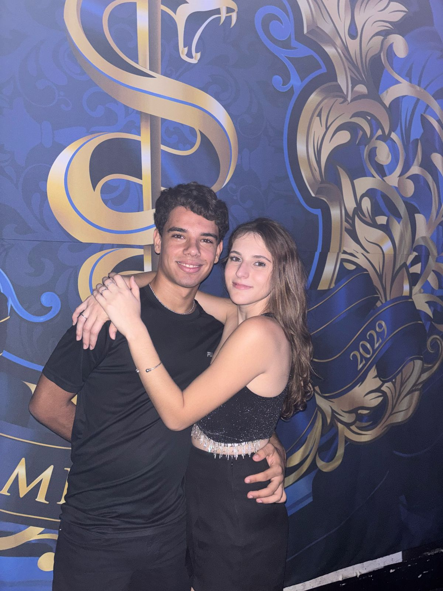
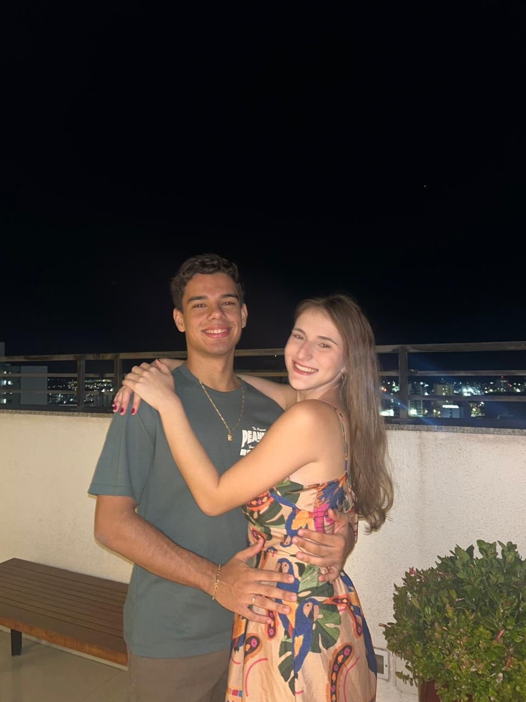
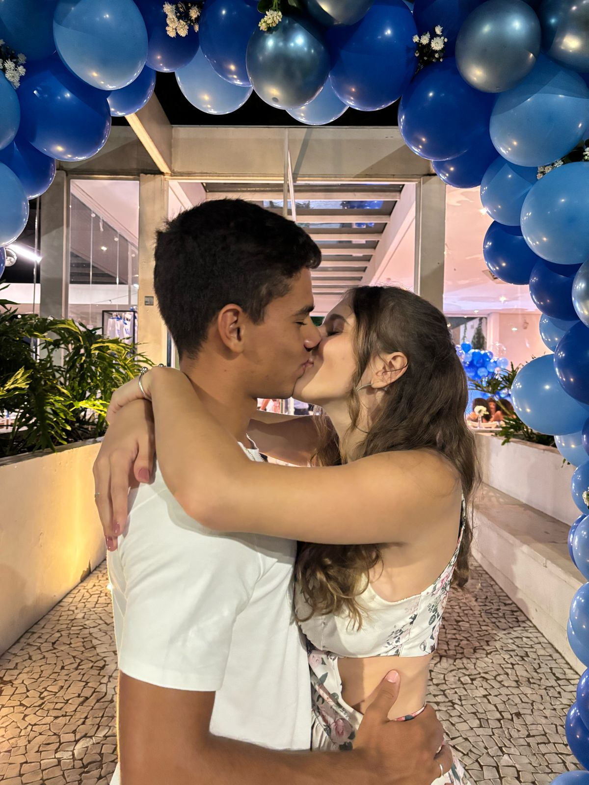
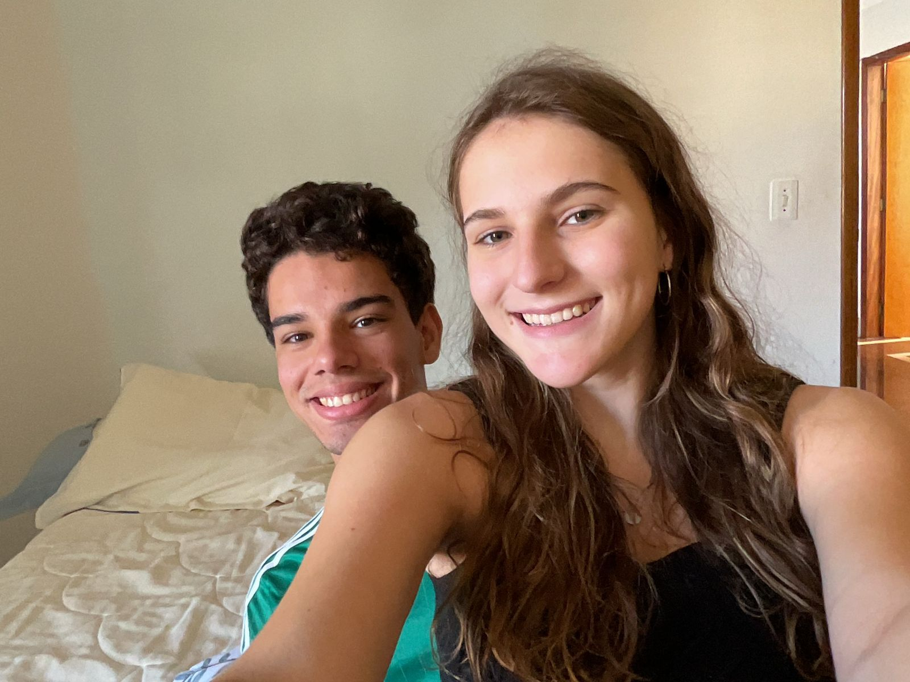
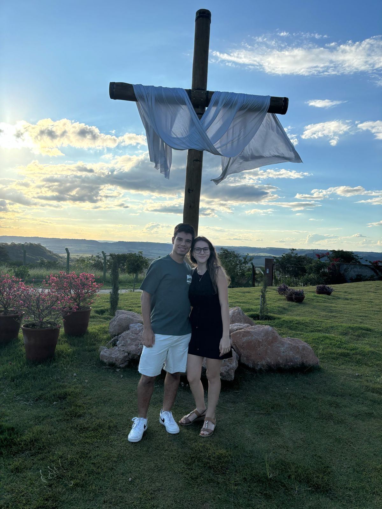
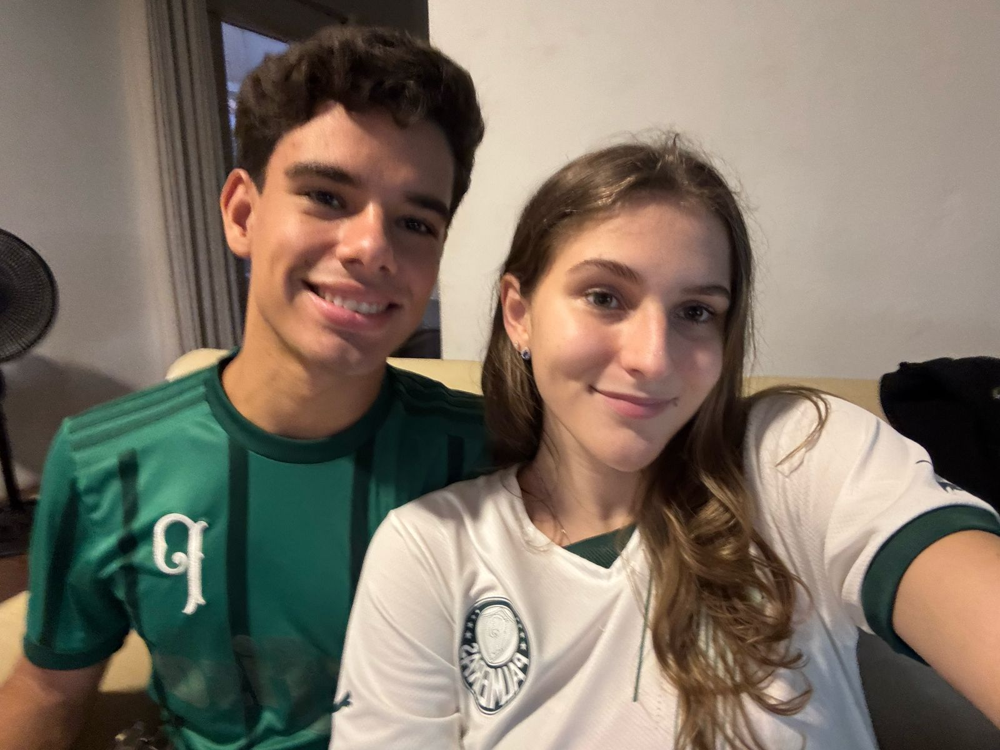
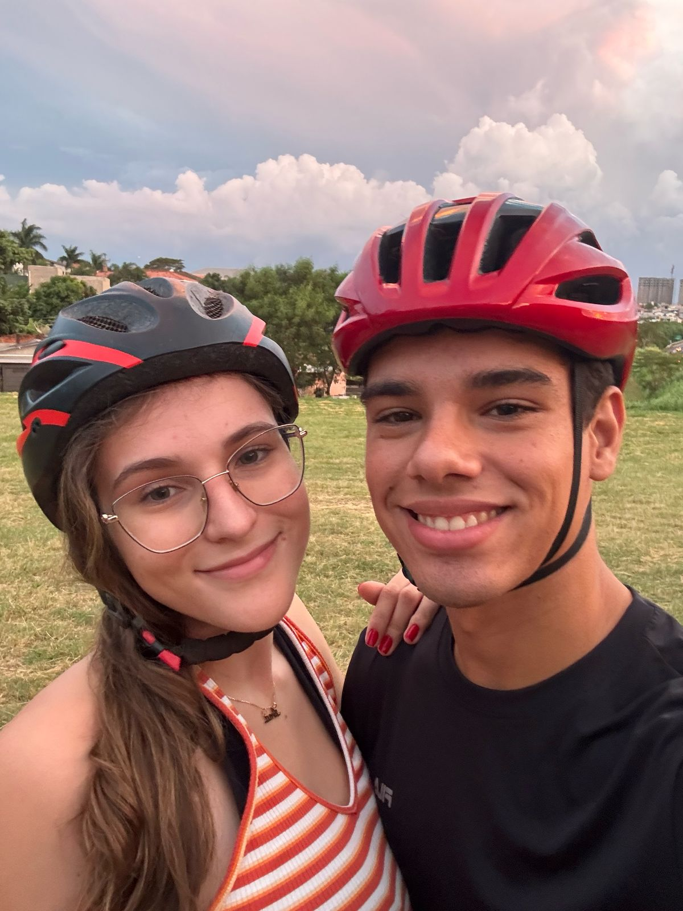

Minha Cartinha para vc Ana Elisa
Oi meu amor, to vindo fazer essa surpresa pq eu fiz cagadinha na quarta, mas quero que vc saiba que eu faço e farei de tudo para ser o cara mais foda por vc,
tá difícil me acostumar a escrever essa carta por aqui kkkkkkkkkk é bem diferente. Sei também que faz muito tempo desde minha última surpresa pra vc pq nesses últimos tempos os estudos
estão puxados e no meu trabalho também não é fácil mas é muito bom reservar esse tempo pra fazer uma surpresa tão especial para você, então to aqui
to usando todo o conhecimento que eu tenho pra não ficar muito feio. Mor agora é sério, eu sou muito muito muito feliz com vc meu amor vc me completa demais e acho que
nessa altura vc já reparou nas fotos aqui da esquerda né. São vários momentos especiais e que me marcaram muito, além de que nessas fotos a gente ta um PUTA CASALZÃO DA PORRA.
Mor uma das coisas que mais me deixa tranquilo em relação ao nosso relacionamento é que os nossos momentos bons são maravilhosos e nossos momentos ruins nunca são tão ruins,
pq eu sinto que a gente sempre consegue se resolver e entender o lado do outro quando os animos se esfriam. E eu queria te falar que eu TE AMOOOOOO MUITOOOOOOO, sério vc não tem
nossão do tanto que eu te amo meu amor, é muito diferente isso que a gente tem muito mesmo, eu sinto como se já te conhecesse a tanto tempo e junto disso eu sinto que eu te conheço pouco é tão
estranho e engraçado, e isso me deixa muito alegre, saber que eu tenho alguém que eu confio e conheço e que ao mesmo tempo eu sempre to aprendendo mais sobre. Você diverte muito os meus dias
e sinceramente eu não me imagino mais sem vc mesmo amor vc é uma das minhas pessoas favoritas nesse mundão inteiro, vc é muito especial e é muito legal poder conviver com vc.
Oie acabei de te mandar msg falando que terminei 1/3 da surpresa, é neidinha ta achando que era só isso espera que tem mais. Mor nesse parágrafo queria falar um pouco de cada uma das fotos do lado esquerdo,
na 1) é a gente junto dando risada oq mostra que a gente se diverte muito juntos akakakakkaa adoro, depois tem a gente no felipe, na festa da med e na festa da camilão e pelo amor de deus (jorge e matheus)
olha que CASALZÃO BONITO MEU DEUS, essas fotos vão aparecer na festa de casamento pra mostrar como a gente é bonito. Depois tem 2 fotos na minha casa, e é legal isso pq vc deixa minha casa muito mais divertida,
sério tem outra vibe a minha casa quando você tá aqui com a gente. E tem uma no mosteiro que eu gostei muito de te levar, mas confesso que fiquei com muita dó pq vc não pode dirigir naquele dia e dormiu bastante
mas nossa amor peraí akakakak fiquei olhando vc nas fotos vc é bem gatinha sabia disso? E por último nossa foto de bike que eu AMEIIII esse dia você não tem noção de como é legal quando vc demonstra interesse pelas
coisas que eu faço me sinto o cara mais foda do mundo.
EPA EPA EPA você acha mesmo que eu não to vendo você agora nesse momento, depois de ver isso virar pra mim dizer que fofo mozi hã tá achando que eu não te conheço né, e agora que eu falei isso você deu sua risadinha fofa,
akkakakakakka te amo muito neidinha, mor seguinte achou que acabou né mas você reparou que lá em cima tem 3 palavras com a cor vermelha? Elas são links que vão te mandar para outras páginas e que estão o restante da sua surpresa
te amo muito mozi sua gatona amor da minha vida. Te dedico essa música:
Seu sorriso é tão resplandecente
Que deixou meu coração alegre
Me dê a mão
Pra fugir desta terrível escuridão
Desde o dia em que eu te reencontrei
Me lembrei daquele lindo lugar
Que na minha infância era
Especial para mim
Quero saber
Se comigo você quer vir dançar
Se me der a mão eu te levarei
Por um caminho, cheio de sombras e de luz
Você pode até não perceber
Mas o meu coração se amarrou em você
Que precisa de alguém
Pra te mostrar o amor que o mundo te dá
Meu alegre coração palpita
Por um universo de esperança
Me dê a mão
A magia nos espera
Vou te amar por toda a minha vida
Vem comigo por este caminho
Me dê a mão
Pra fugir desta terrível escuridão
Haja o que houver, eu te amarei
E quero para sempre ao seu lado estar
Deixe de pensar em tudo, que já ficou para trás
Quero saber, se é comigo que você vai sonhar
Se não tenho alguém em quem confiar
Já não encontro o caminho que me leve a você
Quando enfim consegui confessar
Todo o meu sentimento e desejo de amar
Não sei o que me parou
Mas hoje eu vou lutar com tudo o que sou
Meu alegre coração palpita
Por um universo de esperança
Me dê a mão
A magia nos espera
Vou te amar por toda a minha vida
Vem comigo por este caminho
Me dê a mão
Pra fugir desta terrível escuridão